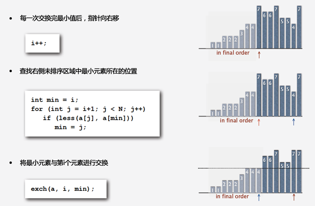
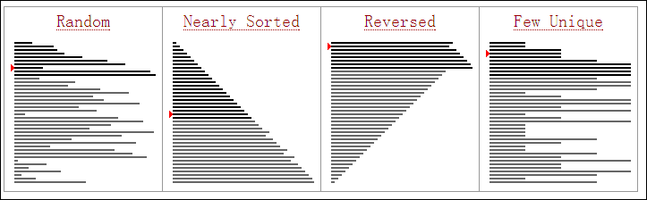

选择排序
- 原理
选择排序很简单，步骤如下：
- 从左至右遍历，找到最小(大)的元素，然后与第一个元素交换。
- 从剩余未排序元素中继续寻找最小（大）元素，然后与第二个元素进行交换。
- 以此类推，直到所有元素均排序完毕。
之所以称之为选择排序，是因为每一次遍历未排序的序列我们总是从中选择出最小的元素。
下面是选择排序的动画演示

- 实现
|
|
- 分析
下图分析了选择排序中每一次排序的过程，您可以对照图中右边的柱状图来看。

- 时间复杂度
选择排序的交换操作介于0和(n-1)次之间。选择排序的比较操作为n(n-1)/2次之间。选择排序的赋值操作介于0和3(n-1)次之间。
比较次数O(n^2)，比较次数与关键字的初始状态无关，总的比较次数 N=(n-1)+(n-2)+...+1=n(n-1)/2。交换次数O(n)，最好情况是，已经有序，交换0次；最坏情况是，逆序，交换`n-1次。交换次数比冒泡排序较少，由于交换所需CPU时间比比较所需的CPU时间多，n值较小时，选择排序比冒泡排序快。
原地操作几乎是选择排序的唯一优点，当空间复杂度要求较高时，可以考虑选择排序；实际适用的场合非常罕见。
插入排序
- 原理
插入排序也是一种比较直观的排序方式。可以以我们平常打扑克牌为例来说明，假设我们那在手上的牌都是排好序的，那么插入排序可以理解为我们每一次将摸到的牌，和手中的牌从左到右依次进行对比，如果找到合适的位置则直接插入。具体步骤：
- 从第一个元素开始，该元素可以认为已经被排序
- 取出下一个元素，在已经排序的元素序列中从后向前扫描
- 如果该元素小于前面的元素（已排序），则依次与前面元素进行比较如果小于则交换，直到找到大于该元素的就则停止；
- 如果该元素大于前面的元素（已排序），则重复步骤2
- 重复步骤2~4 直到所有元素都排好序 。
下面是插入排序的动画演示:

- 实现
|
|

- 分析
插入排序在各种初始化条件下的排序效果如下：

- 时间复杂度
- 最好情况下,排序前对象已经按照要求的有序。比较次数(KCN):n−1 ; 移动次数(RMN):为0。则对应的时间复杂度为
O(n)。 - 最坏情况下,排序前对象为要求的顺序的反序。第i趟时第i个对象必须与前面i个对象都做排序码比较,并且每做1次比较就要做1次数据移动（具体可以从下面给出的代码中看出）。比较次数(KCN):1+2+…+(n-1) = n^2/2 ; 移动次数(RMN):为1+2+…+(n-1) = n^2/2。则对应的时间复杂度为
O(n^2)。 - 如果排序记录是随机的，那么根据概率相同的原则，在平均情况下的排序码比较次数和对象移动次数约为n^2/4，因此，直接插入排序的时间复杂度为
O(n^2)。
#快速排序
1、负责酷狗音乐底层代码的维护，提供酷群、蝰蛇音效、D1和其他新需求的接口。 2、重构酷狗音乐旧播放器。